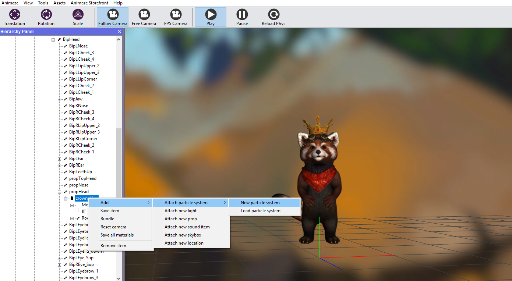
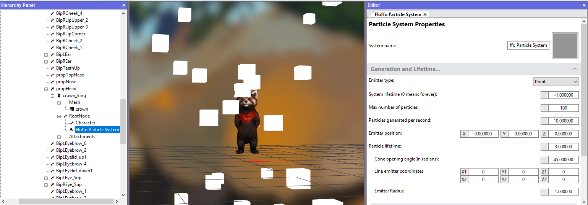
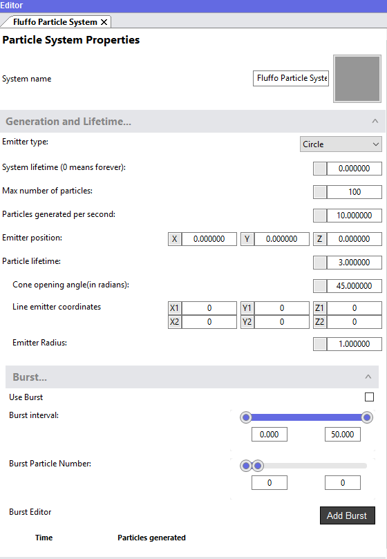
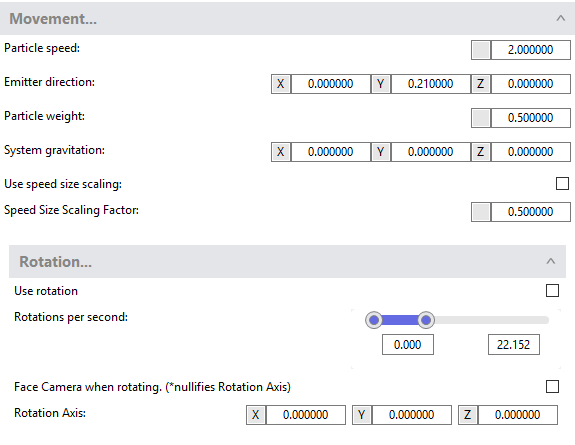
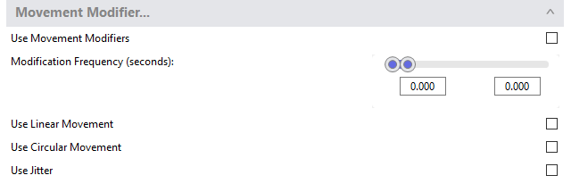
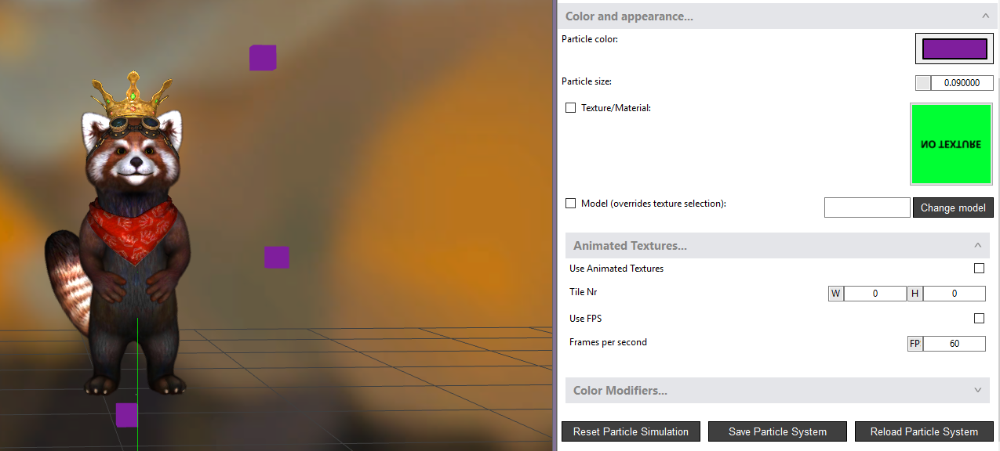
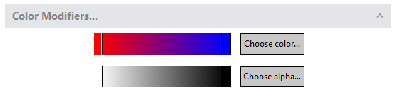
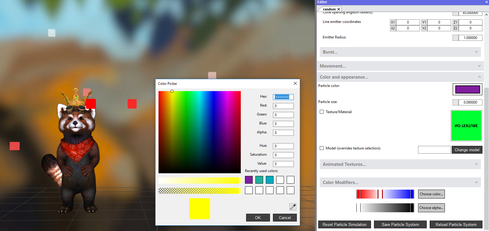
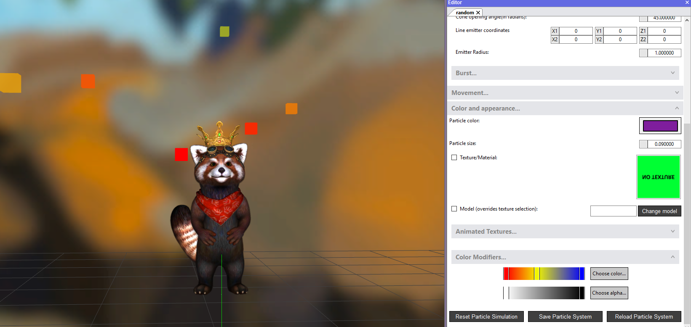

How do I add Particle Systems?
Animaze empowers you to create smoke effects, flames, clouds, magic spells and almost anything you can imagine, by adding of Particle Systems in your scene, or on your model.
Particles can use textures and 3D models as individual particles, but have a cube mesh as default so the user can focus on generation and movement straight from the beginning. When using textures, each particle behaves as a spherical billboard, facing the camera wherever it may be.
Additionally, Animaze supports binding animated textures/sprites to the particle system to give the user more artistic freedom. Each particle can also change colors dynamically, using a Color Modifier.
Requirements:
- The texture files need to be in .jpg, .png or .ktx format.
- The model files need to be compatible with the Prop/Avatar3D format used in Animaze.
To add particle systems in your scene, or on your model, follow these steps:
- Select the item in the Hierarchy Panel to which you want to attach a particle system. It can be placed randomly in the scene, or attached to an avatar’s bone.
- Right-click the item to which the particle system will be attached and select Add >> Attach particle system >> New particle system
As an example, we chose Fluffo’s crown to attach a particle system.

- Select the particle system in the Hierarchy Panel and start customizing it in the Editor Panel

The Emitter that generates individual particles or bursts of particles can be configured in several ways
- You can edit the settings so that the cone has a larger spread, or the circle has a bigger radius etc.

- Play around with the values to attain the desired effect
- Customize the direction emitter, so that all items can follow the same trajectory or be left moving in random directions.
- Rotation is also possible around a specified axis or while facing the camera (please note that the two options exclude each other)

- Movement modifier component enables movement randomization, circular motion and acceleration

- Change the color and size of the particles, or use a texture, a .model file or animated textures

- If the loaded texture is animated, just check the Use Animated Textures box, and it will be rendered as such
- Particles can also change colors or tints dynamically, using the Color Modifier in the Editor Panel

- To choose a color for the particles, double click the color bar, then single click on the segment created and push Choose color button

As you can see, the particles are already picking up the bar gradient from left side to the segment, where the red color fades out
- depending on the lifetime of particles, they will also reach to the right side of the gradient and turn blue
- in this case we picked the yellow color, so the particles gradually turn from the initial red of the color bar, to yellow

- the alpha bar works in the same way as the color bar, but relatively to the transparence and opacity
- to cancel the chosen colors, right click on the segment
- Save your customizations when done by pushing the Save Particle System button